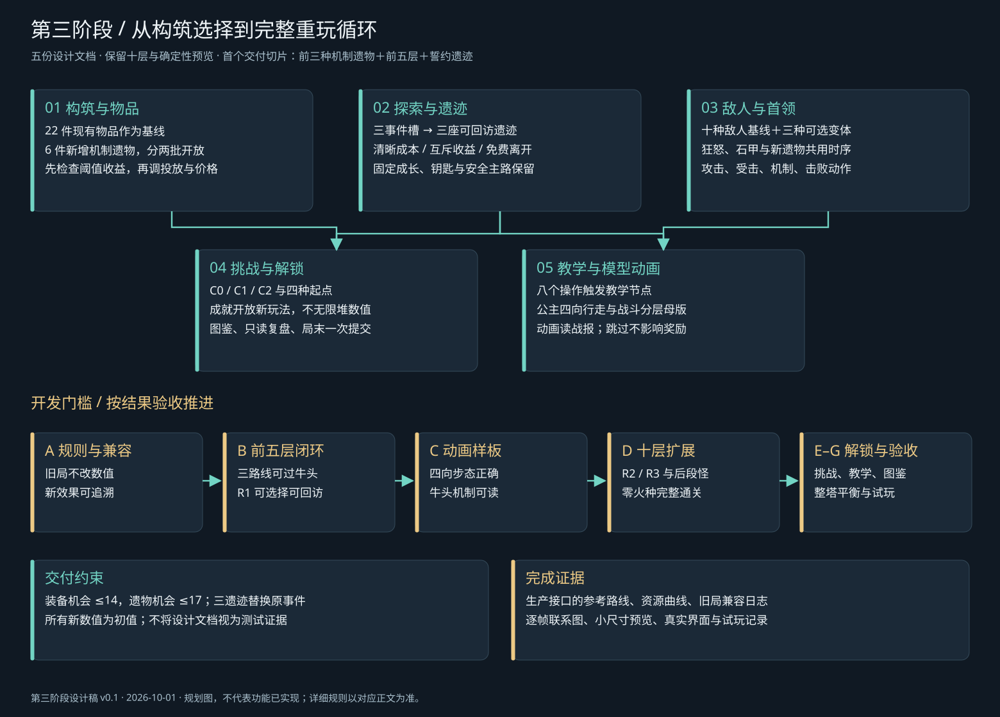
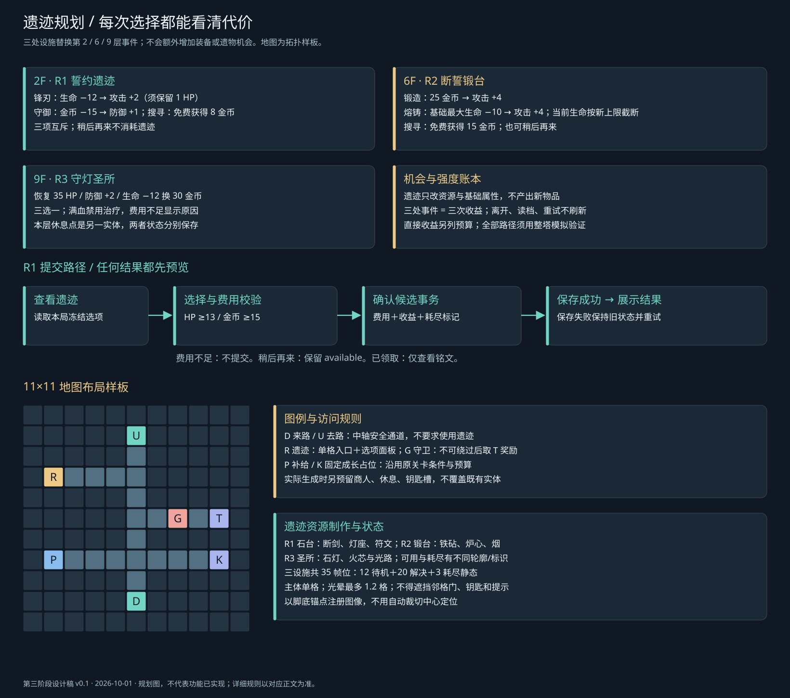
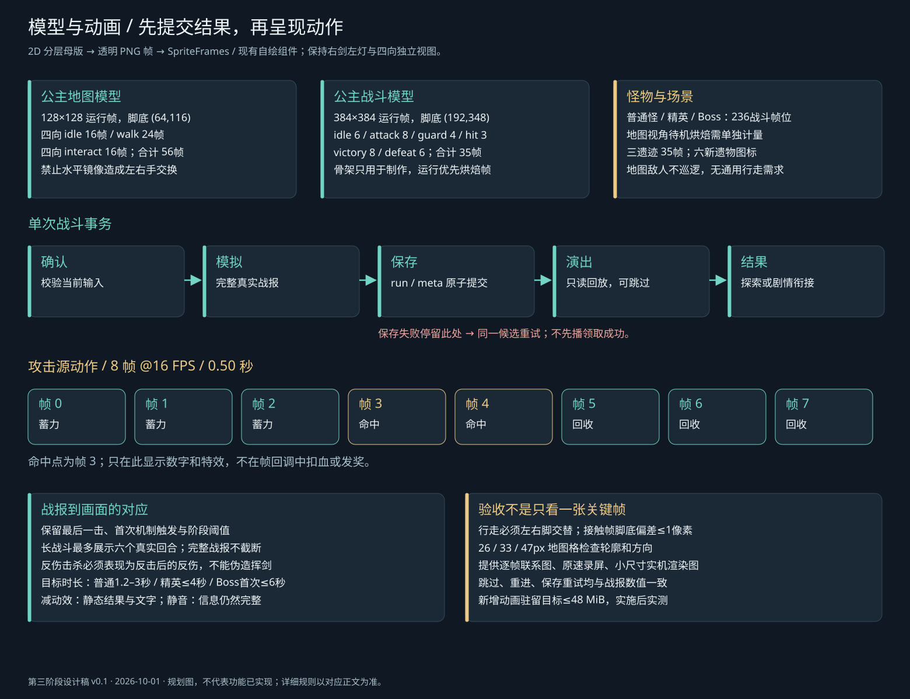

<!doctype html><html lang="zh-CN"><meta charset="utf-8"><meta name="viewport" content="width=device-width,initial-scale=1"><title>塔境 · 第三阶段规划图册</title><style>body{margin:0;background:#101923;color:#eef4f7;font:16px/1.7 'Microsoft YaHei',sans-serif}header,main{max-width:1400px;margin:auto;padding:24px}h1{font-size:30px}h2{font-size:23px}p{color:#a9bfcc}a{color:#72d4c4}nav{display:flex;gap:24px;flex-wrap:wrap}section{margin:32px 0 56px}img{display:block;width:100%;height:auto;margin-top:16px;border:1px solid #344a5a;border-radius:12px}footer{padding:24px;color:#a9bfcc}</style><header><h1>塔境 · 第三阶段规划图册</h1><p>设计稿 v0.1 · 2026-10-01。五份详细设计位于上级目录；这些图是可实施规划，不代表功能或素材已经完成。</p><nav><a href="#d0">开发依赖</a><a href="#d1">遗迹规划</a><a href="#d2">模型动画</a><a href="../README.md">设计总册</a></nav></header><main><section id="d0"><h2>总体开发依赖图</h2><a href="phase3-roadmap.svg" target="_blank">打开原尺寸 SVG</a></section><section id="d1"><h2>遗迹决策与地图规划</h2><a href="ruin-plan.svg" target="_blank">打开原尺寸 SVG</a></section><section id="d2"><h2>模型动画与事务时序</h2><a href="animation-timeline.svg" target="_blank">打开原尺寸 SVG</a></section></main><footer>本图册无外部依赖，可离线查看。原始图形为 SVG，生成源为 build_diagrams.py。</footer></html>